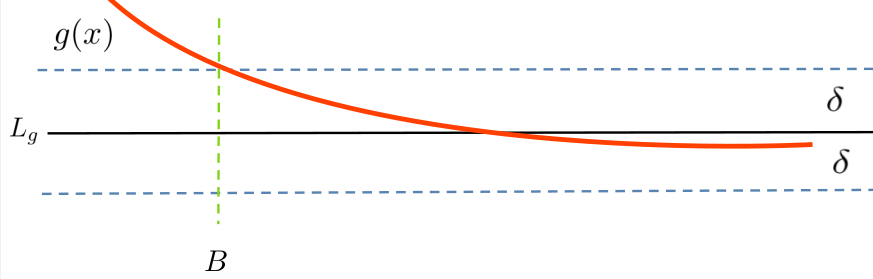

. . . in becoming rigorous, mathematical science takes a character so artificial as to strike everyone; it forgets its historical origins; we see how the questions can be answered, we no longer see how and why they are put.
We began our treatment of limits in Chapter 12 informally because it can take time to develop a mindset appropriate to a thorough understanding of limits. However, by proving theorems using properties of limits which we had not yet shown to be true we’ve left a logical hole in the proofs of nearly every theorem, lemma, and corollary we’ve stated. Bishop Berkeley would be most displeased.
It is time to fill those holes.
Loosely speaking, we know that if, as \(x\) gets “closer and closer” to some real number \(a\text{,}\) the function \(f(x)\) gets “closer and closer” to \(A\) then \(\tlimit{x}{a}{f(x)}=A\text{.}\) This phrase “closer and closer” is the source of the logical holes we need to fill.
To illustrate what can go wrong with the intuitive approach to limits that we’ve used so far, consider the limit \(\limit{x}{1}{f(x)}\text{,}\) when
To get a sense of what this function looks like when we let \(x\) get “closer and closer” to \(1\) we’ve tabulated a few values of \(f(x)\) for \(x\) near \(1\) in the table below.
\(x\)
\(f(x)\)
\(1.5\)
\(4.999\)
\(1.4\)
\(4.999\)
\(1.3\)
\(4.999\)
\(1.2\)
\(4.999\)
\(1.1\)
\(4.999\)
\(1.01\)
\(4.999\)
\(1.001\)
\(4.999\)
\(1.0001\)
\(4.999\)
Seems pretty convincing doesn’t it? Can we conclude from this table that
Use your favorite computational tool to find a value of \(x\) near \(1\) such that \(\abs{f(x)}\lt10^{-3}\text{.}\)
The problem with our example is that none of the \(x\) values in the first column is close enough to \(1\text{.}\) Sure, the numbers \(1\) and \(1.0001\) are very close together. But to evaluate this limit we don’t just want to get close, we want to get close enough. For this particular function we’d have to get much closer to \(1\) before we start to see the values of \(f(x)\) getting close to \(0\text{.}\)
And that’s the problem. The nature of the function we’re taking the limit of must be taken into account when we decide what “close enough” means for any particular limit. This isn’t as bad as it sounds, but as always precision is crucial. We need a definition of limit that doesn’t depend on the nature of the function we’re investigating. A useful definition will also recover the Differentiation Rules in a manner that even Bishop Berkeley would agree is valid.
We will begin with limits “at infinity” because, paradoxically, these are often the easiest to understand. As we proceed through examples the question you want to keep in the back of your mind is, “For this problem how close is close enough?”
Section17.2Getting Around Infinity
It all comes down to understanding infinity, both the infinitely small and the infinitely large. Or rather, it comes down to realizing that we do not understand infinity at all. So, whenever an apparently “infinite quantity” appears we will have to work with and explain it in finite terms. This might sound impossible, but it turns out to be merely difficult.
This approach is within well established mathematical tradition. From the time of the ancient Greeks until the sixteenth century, infinity was carefully excluded from serious mathematical consideration. It was the successful exploitation of the infinitely small (infinitesimals) by Galileo and others that eventually forced mathematicians to study infinity seriously.
Today we tend to conceive of a straight line in infinite terms; as extending infinitely far in two opposite directions. But when Euclid 2
, he very carefully avoided allowing the existence of an “infinite line.” For Euclid a straight line was what today would be called a line segment: the shortest path between two points.
But this restriction immediately caused problems for Euclid. For some of his constructions he needed to be able to extend his line segment. In modern mathematics this is not a problem since we allow lines to extend infinitely far in either direction. So we’d just move to a new point on the line wherever it needs to be.
But when Euclid specified a line segment \(\overline{AB}\) he meant that the points \(A\) and \(B\) were the endpoints of the line segment. To avoid infinite lines he extended the line segment \(\overline{AB}\) by some definite amount out to a point \(C\text{,}\) thereby obtaining a new segment \(\overline{AC}\text{,}\) which — and this is the point — is still finite in length. In this way Euclid explicitly allowed line segments to be extendable to any finite length without ever allowing an infinitely long line.
Subsection17.2.1Horizontal Asymptotes, Redux
We want to ask, and answer, the question
“What number does \(y\) get close to if \(y=\frac1x\) and we allow \(x\) to grow infinitely large?”
as precisely as we can without invoking the notion of the infinitely large. Does this rephrasing work for you?
If \(y=\frac1x\text{,}\) what does \(y\) get close to as \(x\) grows larger and larger?
This seems to be better. We have side-stepped the issue of the infinitely large by saying “larger and larger.” But unfortunately this rephrasing of the question changes its meaning. To see what we mean, think of \(x\) as the radius of a balloon which we want to inflate as much as we possibly can. Suppose we know that when the radius of the balloon is \(8\) it will pop. To avoid popping our balloon, we blow in enough air during the first second to expand the radius to \(x(1)=4\text{.}\) In the next second we expand the radius to fill half of the remaining distance to \(x(2)=6\text{.}\) In the third we repeat the process, expanding it to \(x(3)=7\text{.}\) And we continue in this fashion. At each second the radius of our balloon expands to half of the remaining distance to \(8\text{.}\)
Clearly the balloon’s radius grows larger each second, so \(x\) grows “larger and larger” as required. But the intent of our original question was for \(x\) to become “infinitely large,” not for \(x\) to remain smaller than \(8\text{.}\)
And there is nothing special about \(8\text{.}\) If \(x\) moves half of the distance to \(16\) each second, or halfway to \(32\text{,}\) or even if it moves halfway to \(1,048,576\) at each step we have the same problem. In each case \(x\) is growing “larger and larger” but it is not growing in a manner that reflects what we think we mean when we say that \(x\) is growing “infinitely large.”
Problem17.2.
Suppose \(B\) is a positive real number, and that \(x(0)=0\text{.}\) Find a formula for \(x\) as a function of time \(t\) (in seconds), such that at each integer \(t>0\text{,}\) the distance from \(x(t)\) to \(B\) is half of the distance from \(x(t-1)\) to \(B\text{.}\)
In this situation \(x\) is said to be bounded above because there is an upper bound on how large \(x\) can be, despite the fact that \(x\) is growing “larger and larger.”
Recall that in Section 12.1 we mentioned that the notation \(x\rightarrow\infty\) should be read aloud as “\(x\) increases without bound,” so we rephrase our question as follows:
If \(y=\frac1x\text{,}\) what does \(y\) get close to as \(x\) increases without bound?
This rephrasing poses our question unambiguously and without reference to the “infinitely large.” And the answer is very clear: \(y\) gets closer and closer to zero. But of course, the phrase “closer and closer” is also too vague, and for essentially the same reason that “larger and larger” is too vague to be useful.
Again, it is not our conception of the problem that is the difficulty. It is the language we’re using. As before, we must choose our words more carefully.
To capture the idea that \(y=\frac1x\) gets “closer and closer” to zero, without ever getting to zero let’s think this through, being careful to say exactly what we mean, no more, no less. To begin we ask, “Is there a value of \(x\) which forces \(y\) to be less than, say \(\frac{1}{2}\text{?}\)”
Recall that if \(0\lt a\lt b\) then \(\frac1a\gt\frac1b\text{.}\) Thus if \(\frac{1}{x}\lt
\frac{1}{2}\text{,}\) then \(\frac{1}{\frac{1}{x}}\gt
\frac{1}{\frac{1}{2}}\text{,}\) or \(x\gt 2\text{.}\)
So apparently any value of \(x\) strictly greater than \(2\) will guarantee that \(y=\frac1x\) is less than \(\frac{1}{2}\text{.}\)
Stop and think about that last sentence. Do you see that we’ve actually discovered more than the original question asked for? Our question was, “Is there a value of \(x\) which forces \(y\) to be less than \(1/2\text{?}\)” But we’ve actually found all of them. We’ve found that if \(x\) is any number greater than \(2\) then \(y=\frac1x\lt \frac12,\) regardless of which number we use.
Can we make \(y\lt 1/3?\) Sure. Exactly the same analysis will show that if \(x\gt 3\text{,}\) then \(y=\frac1x\lt
\frac13\text{,}\) or if \(x\gt 4\text{,}\) then \(y\lt 1/4\text{,}\) and so on.
Problem17.3.
If \(y=\frac1x\) how large must \(x\) be in order to guarantee that
(a)
\(y\lt 1/5\)
(b)
\(y\lt 1/10\)
(c)
\(y\lt 1/100\)
(d)
\(y\lt 1/1000000\)
It should be clear that we needn’t have stopped at one millionth \(\left(10^{-6}\right)\text{.}\) The same argument will show that if we want \(y=\frac1x\lt 10^{-10},\) we need \(x\gt 10^{10}.\) And that if we want \(y=\frac1x\lt
10^{-1000},\) we need \(x\gt 10^{1000}.\)
So, by an appropriate choice of \(x\) we can make \(y=\frac1x\) as close to \(0\) as we choose. To be a little more precise we say that we can make \(y\) arbitrarily close to zero, even if it never actually is zero. And this is what we really intended when we said that \(y\) gets “closer and closer” (or “goes to”) zero.
This idea is exactly what the limit notation we introduced in Chapter 12 was intended to capture. So here at last are our question and answer precisely stated:
Question:
Why is \(y(x)=\limit{x}{\infty}{\frac1x}=0\text{?}\)
Answer:
Because we guarantee that \(\frac1x{}\) is within any arbitrary distance, \(D\text{,}\) of zero by taking \(x\gt
\frac1D\text{.}\)
Subsection17.2.2Convincing Berkeley
Our discussion, in Subsection 17.2.1, of the meaning of \(\limit{x}{\infty}{\frac1x}=0\) is the key to redefining limits in a precise manner that would satisfy a skeptic such as Bishop Berkeley. For this particular limit, every challenge (How can we assure that \(y=\frac1x \) is within \(D\) of zero?) had it’s corresponding response (Take \(x\gt
\frac1D \text{.}\)). But rather than doing this case-by-case, let’s do it for all cases.
We need answer all possible challenges at once. This seems like a lot to ask until we think about it a bit. All we really have to do is suppose that we have some small, positive, unspecified number and show that we can find out how large \(x\) has to be to make \(y=\frac1x\) less than that number. For the sake of being definite we’ll give our number a name. It is traditional to call it \(\eps\text{.}\)
Suppose that \(\eps\gt 0\) and we want to figure out how large to make \(x\) to guarantee that \(y=\frac1x\lt \eps.\) If we want \(y\lt \eps\text{,}\) first substitute \(\frac1x\) for \(y\) giving \(\frac1x\lt \eps\text{.}\) Solve this for \(x\) (remember that if \(a\lt b\) then \(\frac1a\gt \frac1b\)) so that \(x\gt \frac1\eps\text{.}\)
Do you see the significance of this? Because we left \(\eps\) unspecified (other than requiring it to be positive), we’ve met all possible challenges. If the challenge is to make \(y\) less than \(10^{-1000000000}\) our response is, “We’ve already done that. Just take \(\eps= 10^{-1000000000} \text{.}\)” Repeating the computation above gives \(x\gt10^{1000000000} \text{.}\)
Now for some function \(f(x)\gt0\text{,}\) the statement \(\tlimit{x}{\infty}{f(x)}=0\) has the following precise meaning:
If for each \(\eps\gt0\) we can make \(f(x)\lt \eps\) by taking \(x\) sufficiently large, then we say that “the limit as \(x\) approaches infinity is zero.”
To be sure, when we allow \(\eps\gt0\) to be arbitrary, but unspecified we skirt the edge of the infinitely small. But this is the point. If \(\eps\) is arbitrary then it can be as small as we need for it to be without ever being infinitely small. This is akin to Euclid allowing lines to be extended to any, unspecified, length without allowing them to be infinite in length. This is the idea underlying limits and limit notation.
Warning! Be aware that the way we tend to speak about limits and the meaning of the limit notation are inconsistent. This can present a lot of problems for the beginner. If we are speaking loosely, among friends, we would read this statement, \(\tlimit{x}{\infty}{\frac1x}=0\text{,}\) as: “The limit of one over \(x\) as \(x\) goes to infinity is equal to zero.”
This is a very poor way to express the idea we are trying to capture. To say that \(x\) “goes to” infinity completely undercuts everything we’ve said about infinity because it treats infinity as if it is an actual number we can get close to. It is not
When reading \(\tlimit{x}{\infty}{\frac1x}=0\) we should say “The limit of \(\frac1x \) as \(x\) increases without bound is zero”, but almost no one does. Generally, when talking about limits what we actually say is not what the notation means. That incongruity can be very confusing at first. In this text we will be very careful not to speak so casually. At least not until we have more experience with limits.
We have only begun, but this is enough for us to offer a first definition of the limit concept. We generalize slightly.
Definition17.4.Positive Function With Limit Zero at Infinity.
Suppose \(f(x)\gt 0\) for all \(x\gt 0.\) Then we say that \(\limit{x}{\infty}{f(x)}=0\) if and only if for every \(\eps\gt 0\) we can find a real number \(B\) with the property that if \(x\gt B\text{,}\) then \(f(x)\lt \eps\text{.}\)
The parameter \(B\) is the lower bound that \(x\) has to exceed for \(f(x)\) to be less than \(\eps\text{.}\) In our first example we had \(B=2\text{,}\) in our last we had \(B=1/\eps\text{.}\) Naming the lower bound like this gives us a concrete way to specify how large \(x\) has to be. To great extent finding \(B\) is the whole problem. This is easier to see in an example.
Example17.5.
Show that if \(f(x)=\frac{1}{x^2},\) then \(\limit{x}{\infty}{f(x)}=0.\) As before take \(\eps\gt 0\text{.}\) (Think of epsilon as being handed to you by Bishop Berkeley. You don’t get to control it, he does. Moreover all he will tell you about it is that it is a positive number.)
Once epsilon is given your job is to find out how large \(x\) has to be to guarantee that \(f(x)=\frac{1}{x^2}\lt \eps.\) So we work the problem backwards. That is, we start with \(f(x)=\frac{1}{x^2}\lt \eps\) and solve for \(\eps\) to find that \(x\gt \frac{1}{\sqrt{\eps}}\text{.}\) If we take \(B=\frac{1}{\sqrt{\eps}}\) when \(x\gt B=\frac{1}{\sqrt{\eps}}\) then
Use Definition 17.4 to prove that for each of the functions below \(\limit{x}{\infty}{f(x)}=0\text{.}\) That is, assume \(\eps\gt0\) is given and find a lower bound \(B\) such that if \(x\gt B\) then \(f(x)\lt\eps\text{.}\)
(a)
\(f(x)=\frac1{x^3}\)
(b)
\(f(x)=\frac1{x^4}\)
(c)
\(f(x)=\frac1{x^5}\)
(d)
\(f(x)=\frac1{x+1}\)
(e)
\(f(x)=\frac1{2x+1}\)
(f)
\(f(x)=\frac1{5x+7}\)
Subsection17.2.3Refining the Definition of a Limit
Definition 17.4 works as long as \(f(x)\gt 0\text{,}\) but without this restriction it fails utterly as our next example shows:
Example17.7.
Suppose \(f(x) = -2-\frac{1}{x}.\) Can you guess the value of \(\limit{x}{\infty}{f(x)}\text{?}\) Let \(\eps\gt 0\) be given. Then when \(B\) has any positive value, if \(x\gt B\) we have
and by Definition 17.4 we conclude that \(\tlimit{x}{\infty}{f(x)} =0\) since all of the requirements of our definition have been met (except, of course, \(f(x)\gt0\)). Of course, this is nonsense. As we have noted as \(x\) increases without bound \(\frac1x\) gets arbitrarily close to \(0\text{.}\) So clearly \(\tlimit{x}{\infty}{f(x)}=-2\text{.}\) That we are able to “prove” that \(f(x)\) goes to zero simply means that Definition 17.4 doesn’t capture everything we need. We need a more encompassing definition of a limit.
Based on our experience in Example 17.7 with \(f(x) = -2-\frac1x\text{,}\) what would you say needs to be changed in Definition 17.4 to allow \(f(x)\le0\) as well?
The problem of course, is that if \(\eps\gt 0\) is given the statement \(f(x) \lt \eps\) doesn’t really capture the idea that \(f(x)\) is near the number zero, only that it is less than the number \(\eps\text{.}\) For example, \(-1000\) is less than \(\eps\) but it is nowhere near zero. What we need is a way to measure how far \(f(x)\) is from zero, regardless of whether in the positive or the negative direction.
That is exactly what the absolute value function measures. For example, both \(3\) and \(-3\) are the same distance from zero, the first one in the positive and the second one in the negative direction. That is \(\abs{3}=\abs{-3}=3\text{.}\)
We need to modify our definition so that the distance from \(y\) to zero is less than \(\eps\text{.}\) We want \(\abs{y}\lt \eps,\) not just \(y\lt \eps\text{.}\)
Definition17.8.Zero Limit at Infinity.
Suppose \(f(x)\) is defined on some interval \((\alpha, \infty)\text{.}\) Then we say that \(\limit{x}{\infty}{f(x)}=0\) if and only if for every \(\eps\gt 0\) we can find a real number \(B\) with the property that whenever \(x\gt B,\)\(\abs{f(x)}\lt \eps.\)
Example17.9.
Suppose \(f(x) = -\frac1{x}\text{.}\) We want to prove rigorously that \(\tlimit{x}{\infty}{f(x)}=0\text{.}\)
Scrapwork17.1.
Let \(\eps\gt0\) be given.
As we did in Example 17.5 we find the bound \(B\) by working the problem backwards. We want to end with \(\abs{f(x)}\lt\eps\text{,}\) so that’s where we start.
Since we are only interested in what happens to \(f(x)\) as \(x\rightarrow\infty\text{,}\) we can safely assume that \(x\gt0\text{.}\) In that case if
and if \(\frac1x \lt\eps\) then \(x \gt 1/\eps\text{,}\) so apparently to make \(\abs{f(x)}\lt\eps\) we need \(x\gt\frac1\eps\text{.}\) So we take \(B=\frac1\eps\text{.}\)
END OF SCRAPWORK
Proof.
Let \(\eps\gt0\) be given. Take \(B=\frac1\eps\text{.}\) If \(x\gt B\) then
\begin{equation*}
x \gt\frac{1}{\eps}.
\end{equation*}
Therefore, by Definition 17.8\(\tlimit{x}{\infty}{f(x)}=0\text{.}\)
This example displays the format of a limit proof that you need to adhere to. Below is an outline of the format. Do not depart from this format. This is not a course in creative writing.
First:
State the challenge, \(\eps\gt0\text{.}\)
Second:
Specify the bound \(B\) (usually in terms of \(\eps\)).
Third:
Show that if \(x\gt B\) then \(\abs{f(x)}\lt\eps\text{.}\)
Fourth:
State your conclusion.
Problem17.10.
Identify which statements in the proof in Example 17.9 correspond to the first, second, third, and fourth parts of the format presented above.
Example17.11.
Our previous examples and problems in this section were fairly simple as formal limit problems go. This one is more complex.
Use Definition 17.8 to show that \(\tlimit{x}{\infty}{\frac{1}{5x-x^2}}=0\text{.}\)
Scrapwork17.2.
For a given \(\eps\gt0\text{,}\) we want to end up with
Part of what makes this limit more complex is that the part inside the absolute value \(\frac{1}{5x-x^2}\text{,}\) is not always positive. We need to deal with that somehow.
First, since we are only concerned about what happens as \(x\rightarrow\infty\) it is safe to assume that \(x\gt0\text{.}\) In that case, \(x=\abs{x}\text{.}\) Next, observe that if \(x\gt 5\) also, then \(x^2\gt 5x\text{.}\) Thus \(5x-x^2\lt0\text{,}\) so that \(\abs{\frac{1}{5x-x^2}}=\frac{1}{x^2-5x}\text{.}\) We could now work backwards like before, and solve for \(\frac{1}{x^2-5x}\lt\eps\text{.}\) This will work fine, but the Algebra gets very messy. Try it and see.
There is a sneaky way to do this that avoids some of the Algebra. Notice that \(\frac{1}{x^2-5x}=\left(\frac{1}{x-5}\right)\cdot\left(\frac1x\right)\text{.}\) Notice further that if \(x\gt6\text{,}\) then \(x-5\gt1\) so that \(\frac{1}{x-5}\lt1\text{.}\) Putting all of this together we see that for \(x\gt6\text{,}\)
Explain carefully, and in detail, the reasoning that supports the claims made in Equations (17.1) and (17.2).
Notice that in Example 17.9 and Example 17.11 that the scrapwork was an essential part of the solution, but in the formal proof the results of the scrapwork were so abbreviated as to almost not be present. This is part of the formalism of mathematical writing. We try to make sure that everything that needs to be said is said — and absolutely nothing more. In this instance in particular, we are not obligated to explain where the bound \(B\) came from, only that it works. It can take time to become comfortable with this presentation style.
Even with practice very few people can read a formal proof without doing the computations necessary to show that all of the claims made are actually true. Keep paper and pencil handy at all times to help you follow the argument.
Problem17.13.
For each of the following show that \(\tlimit{x}{\infty}{f(x)}=0\text{.}\)
(a)
\(f(x)=\frac{1}{x+2}\)
(b)
\(f(x)=\frac{1}{x^2}\)
(c)
\(f(x)=\frac{1}{x^3}\)
(d)
\(f(x)=\frac{1}{x^3+2}\)
(e)
\(f(x)=-\frac{2}{x}\)
(f)
\(f(x)= \frac{2}{x^2}\)
(g)
\(f(x)= \frac{1}{5x-7}\)
(h)
\(f(x)= \frac{\sin(x)}{x}\)
Hint.
\(\abs{\sin(x)}\le1\text{.}\)}
Definition 17.8 only tells us what it means when the limit of some function as \(x\rightarrow\infty\) is zero. But as we observed in Example 17.7 as \(x\) increases without bound \(f(x)=-2-\frac1x\) approaches \(-2\text{,}\) not \(0\text{.}\) We’ll need something more general, but all of the important ideas have been introduced. We generalize Definition 17.8 as follows.
Definition17.14.A Limit at \(+\infty\).
Suppose that \(L\) is a real number and that \(f(x)\) is defined on some interval \((\alpha, \infty)\text{.}\) Then we say that
Suppose \(f(x)=1-\frac1x\text{.}\) Intuitively, it is clear that \(\tlimit{x}{\infty}{f(x)}=1\) but we need to prove that this is so.
Scrapwork17.3.
Suppose \(\eps\gt0\) is given. We need to specify a number \(B\) (probably in terms of \(\eps\)), with the property that if \(x\gt B\) then \(\abs{f(x) - 1}\lt \eps.\) So we will work backwards from this inequality.
In Section 12.1 we approached the problem of finding a horizontal asymptote of \(f(x)=\frac{5x}{x+1}\) in the following highly intuitive manner, using the “\(\approach{\infty}\)” notation.
so we will stipulate that \(B\) (and therefore \(x\)) must be at least greater than \(-1\text{.}\) Solving equation (17.3) for \(x\) we see that \(x\gt \frac5\eps-1\) also. So we take \(B\) to be the greater of \(-1\) and \(\frac5\eps-1\text{.}\) We capture this idea with the notation, \(B=\max\left(-1, \frac5\eps-1\right)\text{.}\)
END OF SCRAPWORK
Problem17.17.
(a)
Show that we really only need the condition \(B\gt\frac5\eps-1\) by showing that \(B\gt\frac5\eps-1\) implies that \(B\gt-1\text{.}\)
(b)
Suppose that \(\eps\gt0\) and \(B=\frac5\eps-1\text{.}\) Prove that if \(x>B\) then \(\abs{\frac{5x}{x+1}-5}\lt \eps.\)
Problem17.18.
We want to give a rigorous proof that \(\tlimit{x}{\infty}{\frac{x^2+100}{4x^2}}=\frac14\text{.}\) Let \(\eps\gt0\) be given.
(a)
Do the scrapwork that shows that we must take \(x\gt B
= \frac{5}{\sqrt{\eps}}\text{.}\)
(b)
Show that if \(x\gt B = \frac{5}{\sqrt{\eps}}\) then \(\abs{\frac{x^2+100}{4x^2}-\frac14}\lt\eps.\)
Problem17.19.
Do the scrapwork, and provide a rigorous proof of each of these limits.
It should be clear how to define a limit at \(-\infty\text{.}\) All of the same issues of clarity and precision that we encountered before come up here as well. The only difference is that we have to change the sense of our inequalities to reflect that \(x\) is decreasing without bound.
Definition17.20.A Limit at \(-\infty\).
Suppose \(f(x)\) is defined on some interval \((-\infty,
\alpha)\text{.}\) Then we say that
In the last section, we were able to transform our intuitive understanding of horizontal asymptotes into a rigorous definition of \(\limit{x}{\pm\infty}{f(x)}\) which did not make reference to infinity. Here we will do the same for vertical asymptotes \(\left(\limit{x}{a}{f(x)}=\pm
\infty\right)\text{.}\) Along the way, we will develop a more rigorous way of addressing one sided limits as well.
Recall that in Section 12.3 we encountered the formulas
by formalizing the idea that we can make \(\frac{1}{x}\) as close to 0 as we wish provided we make \(x\) large enough (in absolute value). To rigorously define
we need to do the reverse. That is, we need to find a way to guarantee that \(\frac{1}{x}\) can be made arbirarily large (larger than any arbitrary real number, \(B\)) by determining how close \(x\) needs to be to \(0\text{.}\)
For example, if we want \(\frac{1}{x}>100\text{,}\) then this will happen for \(0\lt
x\lt \frac{1}{100}\text{.}\) If we want \(\frac{1}{x}>1000\text{,}\) then this will happen when \(0\lt x\lt \frac{1}{1000}\text{.}\) It seems reasonable that given a positive number \(B\text{,}\) we should be able to get \(\frac{1}{x}>B\text{,}\) provided \(0\lt
x\lt\frac{1}{B}\text{.}\)
Problem17.22.
(a)
Suppose \(B\gt 0\text{.}\) Show that if \(0\lt
x\lt \frac{1}{B}\) then \(\frac{1}{x}\gt B\text{.}\)
(b)
Suppose \(B\le
0\text{.}\) Show that for any real number \(\delta \gt 0\text{,}\) we have \(\frac{1}{x}>B\) whenever \(0\lt x\lt\delta
\text{.}\)
Using the example \(\rlimit{x}{0}{\frac1x} =\infty \) as a guide, we make the following definition.
if and only if for every real number \(B\gt0\text{,}\) there is a number \(\delta \gt 0\) with the property that whenever \(a\lt x\lt a+\delta \text{,}\)\(f\left(x\right)\gt B\text{.}\)
Drill17.24.
Use this definition to prove that \(\rlimit{x}{0}{\frac1x} =\infty \text{.}\)
As before, we will need to do some scrapwork to produce a suitable \(\delta \text{.}\)
Scrapwork17.5.
We want to find a \(\delta \gt0\) with the property that, for a given \(B\gt 0\text{,}\)\(\frac{1}{{\left(x-1\right)}^3}\gt B\) whenever \(1\lt
x\lt1+\delta \text{.}\)
You might even suspect this without graphing since \(-\frac{1}{x}\lt B\) exactly when \(\frac{1}{x}>-B\text{.}\)
Drill17.28.
Using Definition 17.23 as a guide write down the definition of a right-hand, negatively infinite limit. Compare your answer with Definition 17.29 below. Does your definition work better than ours? Explain.
Using Definition 17.23 as a guide we make the following definition.
if and only if for any real number \(B\lt0\text{,}\) there is a number \(\delta >0\) with the property that whenever \(a\lt x\lt a+\delta \text{,}\)\(f\left(x\right)\lt B\text{.}\)
The following problem shows that Definition 17.29 isn’t strictly necessary because we could define such limits viaDefinition 17.23.
tell us anything about \(\limit{x}{0}{\frac{1}{x}}\text{?}\) (Notice that this is not a one-sided limit.)
Well, yes. Sort of. It tells us that the expression \(\limit{x}{0}{\frac{1}{x}}\) is without meaning; that it is undefined.
Here’s why.
It cannot be true that \(\limit{x}{0}{\frac{1}{x}}=\infty\) because we can always choose a small positive number \(a\) which guarantees that \(f(a)\) is greater than any number, \(B\text{,}\) we might choose.
It cannot be true that \(\limit{x}{0}{\frac{1}{x}}=-\infty\) because we can always choose a small negative number \(a\) which guarantees that \(f(a)\) is less than than any number, \(B\text{,}\) we might choose.
It cannot be true that \(\limit{x}{0}{\frac{1}{x}}\) is equal to some real number because we can always choose a small positive number \(a\) which guarantees that \(f(a)\) is greater than any real number we might choose.
That is, our limit cannot be positively infinite (part (a), it cannot be negatively infinite (part (b), and it cannot be a real number (part (c)).
What we have here is Sherlock Holmes’ Maxim 9.20 taken to its extreme. Instead of eliminating all but one possibility we have eliminated all possibilities. Therefore we forced to conclude that \(\limit{x}{0}{\frac{1}{x}}\) does not exist.
Dig out your the guess you made in response to Drill 12.35 and compare it with Definition 17.34. Were you close? Did you make unjustified assumptions, or ignore some subtlety? Explain.
Problem17.37.
Provide a definition of \(\limit{x}{a}{ f(x)}=-\infty \) similar to Definition 17.34 and use your definition to show that
It is common to take the statement in Problem 17.38 as the definition of \(\limit{x}{a}{f(x)}=\infty \) and then to prove Definition 17.34 as a theorem. You did this in Problem 17.38. Logically the two statements are equivalent so it doesn’t matter which is taken as the definition. Each statement can be used to prove the other as a theorem.
then for every real number \(B>0\text{,}\) there is a \(\delta
\gt 0\) such that \(f\left(x\right)\gt B\) whenever \(a-\delta \lt x\lt a+\delta \) and \(x\neq a\text{.}\)
Finally, notice that in Problem 17.38 , we had the conditions \(a-\delta \lt x\lt a+\delta \) and \(x\neq a\text{.}\) This can be more succinctly written as \(0\lt \left|x-a\right|\lt
\delta \text{.}\) Keep this in mind as you read the next section on limits that don’t involve infinity.
Section17.3Finite Limits at a Real Number
In the previous section we were focused on the relatively simple limits associated with horizontal and vertical asymptotes. But our goal is to use the limit in Definition 13.4 to prove that the Differentiation Rules we’ve been using are valid. To do that we will use the following precise, rigorous definition of a finite limit as \(x\rightarrow a\) where \(a\) is some real number.
Definition17.40.The Limit at a Point.
Suppose \(f(x)\) is a function, that \(a\) is a real number, and that \(f(x)\) is defined near \(a\text{.}\) We say that
if and only if for every \(\eps\gt 0\) there is a \(\delta\gt 0\) with the property that whenever \(0\lt\abs{x-a}\lt \delta\text{,}\)\(\abs{f(x)-L}\lt \eps\text{.}\)
Take particular notice of the fact that neither Definition 17.14 nor Definition 17.40 tells us how to compute the limit. They serve only to rigorously establish what our intuition says the limit should be.
DIGRESSION: The Absolute Value, again.
It can be difficult to work with the absolute value inside of inequalities. To avoid these kinds of problems it is useful to remember that
\begin{align}
\abs{A}\amp{}\le B \amp{}\amp{}\text{ if and only if } \amp{}-B\le A\le B.\tag{17.5}
\end{align}
Although the second version looks slightly more complicated, it has the advantage that there are no absolute value symbols to trip us up.
END OF DIGRESSION
Read carefully and take specific notice of the similarities and the differences between the limit definitions in Definition 17.14, Problem 17.38, and Definition 17.40. In each of these there is a requirement imposed on \(f(x)\) that we need to meet by imposing a corresponding condition on \(x\text{.}\)
In Definition 17.14 it is required that \(f(x)\) be within \(\eps{}\) of \(L\text{,}\) or
Definition 17.40 has aspects of both of the other two. It requires that \(f(x)\) be within \(\eps{}\) of \(L\text{,}\) as in Definition 17.14. We meet this by finding \(\delta \gt 0\) as in Problem 17.38.
Figure 17.41 (below) depicts the situation when \(\limit{x}{a}{f(x)}=L\) visually. For emphasis we have indicated that \(f(x)\) is not defined at \(a\) in our sketch, but it could be. The point is that it doesn’t matter. Limits don’t care what happens at \(a\text{,}\) only what happens near \(a\text{.}\) To emphasize this point we will usually say that \(0\lt\abs{x-a}\lt\delta\text{,}\) rather than \(\abs{x-a}\lt\delta\text{.}\) Because the inequality on the left is strict, we do not consider what happens when \(x=a\text{.}\)
Figure17.41.
As before \(\eps \) is the challenge. To show that the limit exists and is equal to \(L\) as claimed our task is to find a value of \(\delta\) such that, as long as \(x \) is between \(a-\delta \text{ and }a+\delta\) (and \(x\neq a\)) the corresponding \(f(x)\) will be between \(L-\eps \) and \(L+\eps \text{.}\)
More succinctly, we need to find \(\delta \gt 0\) such that if \(0\lt\abs{x-a}\lt\delta\) then \(\abs{f(x)-L}\lt\eps\text{.}\)
Visually, this means that the graph of \(f(x)\) will be between the dashed horizontal lines as long as \(x\) is between the dotted vertical lines in Figure 17.41.
Definition 17.40 is the culmination of approximately \(200\) years of attempts by some very brilliant people to provide a rigorous foundation for Calculus. Don’t expect to absorb this easily. It will take time and effort to fully understand and be able to use it. We will start simply.
\begin{equation*}
\limit{x}{\infty}{f(x)}=L \text{ if and only if }
\limit{x}{\infty}{(f(x)-L)}=0.
\end{equation*}
\begin{equation*}
\limit{x}{-\infty}{f(x)}=L\text{ if and only if
}\limit{x}{-\infty}{(f(x)-L)}=0.
\end{equation*}
\begin{equation*}
\limit{x}{a}{f(x)}=L\text{ if and only if
}\limit{x}{a}{(f(x)-L)}=0.
\end{equation*}
We are not looking for a formal proof, just a reasonable explanation.
Example17.43.
Observe that it is intuitively clear that if \(f(x)=-x^2+2\) then \(\limit{x}{0}{f(x)}=2\text{.}\) We wish to prove this rigorously.
Scrapwork17.6.
Suppose \(\eps\gt0\) is given. Our goal is to find a \(\delta\gt0\) such that if \(0\lt\abs{x-0}\lt\delta\) (or just \(0\lt\abs{x}\lt\delta\)) then \(\abs{f(x)-2}\lt \eps\text{.}\) Solving this for \(x\) we have
Notice that our proof does not give us any new information since it is intuitively clear that \(\limit{x}{0}{(-x^2+2)}=2\text{.}\) The formalism of a limit merely confirms, in a manner even Bishop Berkeley would accept, what we already know to be true.
Incidentally, since \(f(0)=-0^2+2=2\) we have also just proved that \(f(x)\) is continuous at \(x=0\text{.}\) See Definition 14.15.
For simple problems like this one the proof consisted of writing the algebraic steps from our Scrapwork backwards, as you see. This worked because every algebraic step in the Scrapwork was reversible. But don’t jump to conclusions. This will not always be the case.
Clearly the Scrapwork is the most important part of the solution process for this problem. In a very real sense it actually is the solution. We call it Scrapwork because it is the part of the work that you don’t show anyone else because it is messy and not well organized. We kept it clean and orderly here so you could see the reasoning.
The scrapwork is like the scaffolding used to construct a building. The proof is the building. It is absolutely necessary to use the scaffolding while construction is ongoing but you tear it down and clean everything up before you move in. In the same way your proof should be a cleaned up version of your scrapwork. If this example were a homework problem, your solution would be the part that appears after Proof.
We had shown by an intuitive argument that \(\limit{x}{2}{f(x)}= 6\text{.}\) Our previous proof lacked rigor, especially in the last step. We will provide a fully rigorous proof now.
Proof.
Let \(\eps>0\) be given and take \(0\lt\delta\lt\frac{\eps}{3}\text{.}\) Then if \(0\lt \abs{x-2}\lt\delta\) we have
Notice that it is again irrelevant that \(f(2)=10\text{.}\)
Problem17.45.
Use the proof above to recreate the scrapwork that we did before we wrote the proof.
Example17.46.4.
We would like to find the value of \(\limit{x}{\frac12}{\frac{4x^2-1}{2x-1}}\text{,}\) and prove that the value we find is correct.
Remember that none of our limit definitions tell us how to find the value of a limit, only how to prove that it has a particular value after we’ve found it. In our examples so far the value of the limits have been intuitively clear so we haven’t concerned ourselves with this part of the problem. But before we can prove that a limit has a particular value we obviously need to decide what we believe the limit value is.
We have several options for doing this. The simplest is guessing, but guessing works best if we have some intuition about the problem. Guessing blindly is usually a waste of time. Nevertheless, guessing is always an option. Can you guess the value of this limit?
Another simple option is to use a calculator and plug the value of the limit point, in this case \(x=\frac12\text{,}\) and see what the calculator comes up with. This will work if the function is continuous at the limit point. But \(\frac{4x^2-1}{2x-1}\) is not continuous at \(x=\frac12\) so that won’t help with this problem. Try it and see.
A third, and much more useful option is to sketch the graph of \(f(x)\) to see what \(f(x)\) is close to near the limit point. The graph of \(f(x)=\frac{4x^2-1}{2x-1}\) is given below. It is not defined at \(x=1/2\) because when \(x=1/2\) we get zero in the denominator. Nevertheless the limit at \(x=1/2\) seems to exist. As you can see as \(x\) approaches \(1/2\text{,}\)\(f(x)\) appears to approach \(2\text{.}\) Based on this graph it seems likely that the value of the limit is \(2\text{.}\)
As we saw in Chapter 12, Algebra can also be very helpful. In this case we see that
Because we haven’t yet rigorously proved Theorem 14.1, Theorem 14.2, or Theorem 14.7 we can’t use them to construct a rigorous proof. Until they are proved they are not known, they are just believed. Belief is not knowledge.
But there is no problem with using them to gather evidence. So far we have strong evidence that this limit is \(2\text{.}\)
Having gathered our evidence, we now believe that \(\limit{x}{\frac12}{\frac{4x^2-1}{2x-1}}=2\text{.}\) Next we need to do the scrapwork for our proof.
Scrapwork17.7.
As is typical we work backwards from our goal. We need to show that \(\abs{f(x)-2}\lt \eps\) so
A long list of inequalities like these can be a little intimidating. Don’t let that stop you. Verify each transition from one inequality to the next. If you don’t see why a particular transition is valid refer back to the scrapwork.
DIGRESSION: Why We Prove Theorems.
The proof of any theorem will follow logically from the relevant definitions, lemmas, corollaries, and previously proved theorems. However, as we’ve seen proving that \(\limit{x}{\frac12}{\frac{4x^2-1}{2x+1}}=2\) from Definition 17.40 was very delicate and troublesome, and it only gave us one relatively insignificant limit. We’d really like to work more generally than this if we can.
We prove general theorems so that we can use them as tools. Do we have any tools (theorems) that would have made the proof of
Show that \(\tlimit{x}{\frac12}{\frac{4x^2-1}{2x+1}}\) satisfies all of the conditions of L’Hôpital’s Rule 12.60.
(b)
Use L’Hôpital’s Rule 12.60 to prove that \(\tlimit{x}{\frac12}{\frac{4x^2-1}{2x+1}}=2\text{.}\)
(c)
Is your proof in part (b) rigorous? Why or why not?
L’Hôpital’s Rule is a very powerful tool which simultaneously evaluates a limit and provides a rigorous proof of the result. And it is much easier to use than Definition 17.40.
But sadly, it will be of no use to us for the remainder of this chapter. L’Hôpital’s Rule relies on knowing that our differentiation rules are valid, and we don’t know that yet. That the differentiation rules are valid is exactly what we are trying to show. To use L’Hôpital ’s Rule would be to engage in circular reasoning, which is invalid.
END OF DIGRESSION
Example17.49.
In this example we will show rigorously that the derivative of \(f(x)=x^2\) is \(f^\prime(x)=2x\text{.}\) To do that we need to show that
Recall that differentiation is a local property so we are thinking of \(x\) as a fixed, but unspecified real number. The variable in this example is \(h\text{.}\)
Scrapwork17.8.
For \(\eps\gt0\) we need to find \(\delta\gt 0\) such that if \(0\lt\abs{h}\lt\delta\text{,}\) then \(\abs{\frac{f(x+h)-f(x)}{h}-2x}\lt
\eps\text{.}\) Working backwards from this we have
Use the scrapwork above to write down a rigorous proof that if \(f(x)=x^2\) then \(f^\prime(x)=2x\text{.}\)
Section17.4Limit Laws (Theorems)
If we can prove each of the limit laws in Chapter 14 rigorously (i.e, using Definition 17.40) we will have provided a rigorous foundation for Differential Calculus. We will address these now.
Subsection17.4.1The Limit of a Sum
To prove the limit laws we will need to make extensive use of what is called the Triangle Inequality. We state and prove the Triangle Inequality here so that we can cite it as needed.
Theorem17.51.The Triangle Inequality.
For any real numbers \(x\) and \(y\text{,}\)\(\abs{x+y} \leq
\abs{x}+\abs{y}\text{.}\)
so by (17.5) we have \(\abs{x+y} \leq \abs{x}+\abs{y}\text{.}\)
The Limit Laws we need to prove are:
Theorem 14.7:
The Limit of a Constant is the Constant.
Theorem 14.1:
The Limit of a Sum is the Sum of the Limits
Theorem 14.2:
The Limit of a Product is the Product of the Limits
Theorem 14.16:
The Limit of a Composition is the Composition of the Limits, and
Theorem 14.19:
The Squeeze Theorem
We will provide a proof of the “limit at infinity” version of each of these Theorems using Definition 17.14. We will leave the proof of the “limit at a real number” version using the Definition 17.40 as an exercise for you. In every case you can model your scrapwork and proof on the ones we provide.
Theorem17.52.The Limit at Infinity of a Constant Function is the Constant.
Suppose \(L\) and \(K\) are real numbers. If \(f(x)=K\) for all \(x\gt L\) then \(\limit{x}{\infty}{f(x)}=K\text{.}\)
Proof.
Let \(\eps\gt 0\) be given. Take \(B=L.\) Then if \(x\gt B\) we see that
The formalism we’re using requires that we specify some value for \(B\text{.}\) It was convenient to specify \(B=L\text{,}\) but in this proof any value for \(B\ge L\) would have worked as well.
Theorem17.53.The Limit at Negative Infinity of a Constant Function is the Constant.
Suppose \(U\) and \(K\) are real numbers. If \(f(x)=K\) for all \(x\lt U\) then \(\limit{x}{-\infty}{f(x)}=K.\)
Despite the apparent simplicity of this problem there is a lot going on here. Recall that “near” means that \(f(x)=K\) on some open interval, say \((c,d)\text{,}\) containing \(a\) except possibly at \(a\) (see Definition 14.6). You need to find a \(\delta\gt0\) such that if \(-\delta\lt x-a \lt\delta\) then \(f(x)=K\text{.}\) That is, you need an interval of length \(2\delta\) with \(a\) as the midpoint where \(f(x)=K\text{.}\) But there is no guarantee that \(a\) is the midpoint of the interval \((c,d)\text{.}\) This would be an excellent time to engage your visual intuition by drawing a sketch so you can “see” the problem.
Theorem17.57.The Limit of a Sum at Infinity.
If \(\limit{x}{\infty}{f(x)}=L_f\) and \(\limit{x}{\infty}{g(x)}=L_g\) then \(\limit{x}{\infty}{\left(f(x)+g(x)\right)}=L_f+L_g.\)
Scrapwork17.9.
As always we begin by assuming that \(\eps\gt 0\) has been given.
We want to show that if \(x\) is large enough (larger than some specified \(B\)) then
The only information we have to work with is the knowledge that
\begin{equation*}
\limit{x}{\infty}{f(x)}=L_f\text{ and
}\limit{x}{\infty}{g(x)}=L_g,
\end{equation*}
which means that we can make \(\abs{f(x)-L_f}\) and \(\abs{g(x)-L_g}\) as close to zero as we wish, provided we make \(x\) large enough. Rewriting the left-hand side of equation (17.8) and invoking the Triangle Inequality we see that
But as we’ve observed we can make \(\abs{f(x)-L_f}\) and \(\abs{g(x)-L_g}\) as close to zero as we wish, provided we take \(x\) large enough. To be precise, there is a number \(B_f\) such that if \(x\gt B_f\) then \(\abs{f(x)-L_f}\lt\frac{\eps}{2}\text{.}\) Similarly there is a number \(B_g\) such that if \(x\gt B_g\) then \(\abs{g(x)-L_f}\lt\frac{\eps}{2}\text{.}\)
Since we need for both of these things to happen a sufficiently large value of \(x\) is one where \(x\gt B_f\) and \(x\gt B_g\text{.}\)
END OF SCRAPWORK
Proof.
Let \(\eps\gt 0\) be given. Since \(\limit{x}{\infty}{f(x)}=L_f\) there is a bound, \(B_f\) such that if \(x\gt B_f\) then \(\abs{f(x)-L_f}\lt \frac{\eps}{2}.\) Since \(\limit{x}{\infty}{g(x)}=L_g\) there is a bound, \(B_g\) such that if \(x\gt B_g\) then \(\abs{g(x)-L_g}\lt \frac{\eps}{2}.\) Take \(B= \max(B_f,B_g)\text{.}\) Then if \(x\gt B\) then \(x\gt B_f\) and \(x\gt B_g\text{.}\) Thus by the Triangle Inequality (Theorem 17.51)
If \(\alpha(x)\le f(x)\le \beta(x)\) on some interval, \((c, \infty)\) and
\begin{equation*}
\limit{x}{\infty}{\alpha(x)} =
\limit{x}{\infty}{\beta(x)} = L
\end{equation*}
then \(\limit{x}{\infty}{f(x)} = L\) also.
Proof.
Let \(\eps\gt0\) be given. Since \(\limit{x}{\infty}{\alpha(x)} = L\) there is some a real number \(B_\alpha\text{,}\) such that if \(x\gt B_\alpha\) then \(\abs{\alpha(x)-L}\lt \eps\text{.}\) From (17.5) we see that for \(x\gt B_\alpha\text{:}\)
Similarly there is a real number \(B_\beta\text{,}\) such that if \(x\gt B_\beta\) then \(\abs{\beta(x)-L}\lt \eps\text{.}\) So for \(x\gt B_\beta\text{:}\)
In particular, \(-\eps \lt f(x)-L \lt \eps \) so from (17.5) we see that \(\abs{f(x)-L}\lt \eps \text{.}\) Therefore \(\limit{x}{\infty}{f(x)} = L\text{.}\)
If \(\alpha(x)\le f(x)\le \beta(x)\) near \(a\) and \(\limit{x}{a}{\alpha(x)} = \limit{x}{a}{\beta(x)} = L\) then \(\limit{x}{a}{f(x)} = L\) also.
Subsection17.4.3The Limit of a Composition
Recall that at the end of Example 12.66 in Section 12.4 we commented that it is only true that \(\tlimit{x}{a}{f(g(x))}\) is equal to \(f\left(\tlimit{x}{a}{g(x)}\right)\) when \(f\) is continuous at \(g(a)\text{.}\)
The following example demonstrates why we need for \(f\) to be continuous at \(g(a)\text{.}\)
Example17.67.
Let
\begin{equation*}
f(x)=
\begin{cases}
5\amp \text{ if } x\ge1 \\
0\amp \text{ if } x\lt1
\end{cases}
\end{equation*}
and \(g(x)=\frac{x}{x+1}\text{.}\) Observe that \(g(x)\lt
1\) when \(x>0\text{,}\) that \(\tlimit{x}{\infty}{g(x)}=1\text{,}\) and that \(f\) is not continuous at \(x=1\text{.}\) We have \(f\underbrace{\left(\tlimit{x}{\infty}{g(x)}\right)}_{=1} = f(1) =5\) and \(\tlimit{x}{\infty}{f(g(x))} =
\tlimit{x}{\infty}{f\underbrace{\left(\frac{x}{x+1}\right)}_{\lt1}} =
0\text{.}\) Therefore
It will be helpful to have a visual guide for this proof so we will rely on diagrams here in the scrapwork. Our finalized proof below will not.
Let \(\eps\gt0\) be given. We need to show that we can find a \(B\gt0\) such that if \(x\gt B\) then \(\abs{f(g(x))-f(L_g)}\lt\eps\text{.}\)
Since \(f\) is continuous at \(y=L_g\)Definition 14.15 tells us that \(\tlimit{y}{L_g}{f(y)}=f(L_g)\)
Thus Definition 17.40 tells us that there there is a real number \(\delta>0\) such that if \(\abs{y-L_g}\lt\delta\) then \(\abs{f(y)-f(L_g)}\lt\eps\text{,}\) as visualized in the sketch above.
Next, consider what it means to say that \(\tlimit{x}{\infty}{g(x)}=L_g\text{.}\) It means that if we take \(x\) large enough we can make \(g(x)\) as close to \(L_g\) as we would like. In particular, we would like for \(\abs{g(x)-L_g}\lt\delta\) as in the sketch below.

Therefore, we can find a number \(B\) such that for every \(x\gt B\text{,}\)\(\abs{g(x)-L_g}\lt\delta\text{.}\) If we take \(y=g(x)\text{,}\) then we have \(\abs{y-L_g}\lt\delta\text{.}\)
From the continuity of \(f\) at \(L_g\) we know that \(\abs{g(x)-L_g}=\abs{y-L_g}\lt\delta\) means that
and since \(\abs{y-L_g}\lt\delta\) we see, from the continuity of \(f\) at \(L_g\) that \(\abs{f(y)-f(L_g)}\lt\eps\text{.}\) Therefore \(\limit{x}{\infty}{f(g(x))} = f(L_g) =
f\left(\tlimit{x}{\infty}{g(x)}\right).\)
\begin{align*}
\limit{x}{\infty}{f(x)}=L_f \amp{}\amp{} \text{ and }
\amp{}\amp{}\limit{x}{\infty}{g(x)}=L_g
\end{align*}
then \(\limit{x}{\infty}{\left(f(x)\cdot g(x)\right)}=L_f\cdot L_g.\)
The proof of Theorem 17.73 is very straightforward once the following two lemmas have been proved. We state these lemmas here so that we can refer to them in the proof of Theorem 17.73 but the proof of Theorem 17.73 is not complete until these lemmas have been proved.
Lemma17.74.
If \(\limit{x}{\infty}{f(x)}=L_f\) and \(\limit{x}{\infty}{g(x)}=L_g\) then \(\tlimit{x}{\infty}{\left(f(x)\cdot g(x)-f(x)\cdot L_g\right)}=0.\)
Lemma17.75.
If \(\limit{x}{\infty}{f(x)}=L_f\) and \(\limit{x}{\infty}{g(x)}=L_g\) then \(\tlimit{x}{\infty}{\left(f(x)\cdot L_g-L_f\cdot L_g\right)}=0\)
Adding and subtracting the same term like this is a highly non-intuitive, but common “trick.” Most mathematicians call it “adding zero” since middle terms add to zero. We (the authors) call this “uncanceling” because the middle terms cancel. It is hard to tell a priori when this trick will work. Sometimes you just have to try something and see what happens.
In this case our uncanceling allows us to use the Triangle Inequality effectively. From the Triangle Inequality we see that
where \(\eps\) is an arbitrary, positive, real number. An “obvious” strategy is to observe that since we know that \(\tlimit{x}{\infty}{g(x)}=L_g\) it must be that if \(x\) is large enough then \(\abs{g(x)-L_g} \lt \frac{\eps}{\abs{f(x)}}\text{.}\)
But that strategy will fail. Here’s why. Definition 17.14 says that if \(\limit{x}{\infty}{g(x)}=L_g\) then for any single real number \(\eps\) we can find a \(B\) such that if \(x\gt B\) then \(\abs{g(x)-L_g}\lt\eps.\) But \(\frac{\eps}{\abs{f(x)}}\) is not a single real number. For each distinct value of \(x>B\) we’ll have a (possibly) different value of \(f(x)\text{.}\) We have no definition, and no theorem that says we can do this. So we can’t. That strategy won’t work. At least it won’t work in its most obvious form.
But it will work if we can replace \(\abs{f(x)}\) by some fixed value. The following lemma states that since \(f(x)\) has a finite limit, it must be bounded. This will allow us to replace \(\abs{f(x)}\) with that bound, which is a fixed parameter, in our proof of Lemma 17.74.
Lemma17.76.
If \(\tlimit{x}{\infty}{f(x)} = L_f\) then there are positive real numbers \(N\) and \(\beta\text{,}\) such that if \(x\gt \beta\text{,}\) then \(\abs{f(x)} \lt N\text{.}\)
Proof.
Since \(\tlimit{x}{\infty}{f(x) = L_f}\) there is a positive number \(\beta\) such that if \(x\gt \beta\) then \(\abs{f(x)-L_f}\lt 1\text{.}\) So for \(x\gt\beta\text{,}\)
where \(\eps\) is an arbitrary real number. This is very similar to our goal in proving Lemma 17.74. But this time the “obvious” strategy will work. Almost.
That is, as long as \(L_g\neq0\) we can guarantee that \(\abs{L_g}\abs{f(x)-L_f}\lt \eps\) by taking \(x\) large enough to guarantee that \(\abs{f(x)-L_f}\lt \frac{\eps}{\abs{L_g}}\text{.}\)
We will need to handle the case \(L_g=0\) separately.
Proof of Lemma 17.75.
Let \(\eps\gt0\) be given.
There are two cases.
Case 1:
\(L_g\neq0\)
Because \(\tlimit{x}{\infty}{f(x)}=L_f\) there is a real number \(B\) such that if \(x\gt B\) then \(\abs{f(x)-L_f} \lt \frac{\eps}{\abs{L_g}}\)
So if \(x\gt B\) then \(\abs{L_g}\abs{f(x)-L_f} \lt \abs{L_g}\cdot\frac{\eps}{\abs{L_g}}
= \eps\text{.}\)
Therefore \(\tlimit{x}{\infty}{\left(L_gf(x)-L_gL_f\right)}=0\) when \(L_g\neq0\text{.}\)
Case 2:
\(L_g=0\)
In this case \(\abs{L_g}\abs{f(x)-L_f}=0\cdot\abs{f(x)-L_f}=0\lt\eps\text{.}\)
Therefore \(\tlimit{x}{\infty}{\left(L_gf(x)-L_gL_f\right)}=0\) when \(L_g=0\text{.}\)
Since the limit is zero in both cases we see that \(\tlimit{x}{\infty}{\left(L_gf(x)-L_gL_f\right)}=0\text{.}\)
The proofs of these two lemmas was not for the faint of heart. None of the individual pieces was difficult to follow, but putting them all together in the right order was delicate.
As you’ve seen using the limit definition (using \(\eps\) and \(\delta\)) to prove theorems is hard. But, as we said in DIGRESSION: Why We Prove Theorems, the whole point of proving theorems is to give ourselves more refined tools that we can use instead of resorting to definitions.
Lemma 17.75 can also be proved without resorting to the limit definition (using \(\eps\) and \(\delta\)). Prove it by citing Lemma 17.74 and the appropriate, previously proved, limit theorems.
If you find yourself becoming completely absorbed in, and possibly even enjoying the details of these arguments you are surely a mathematician by inclination, if not by training (yet). There are more, and more interesting, results where these came from. Change your major and come join us. Sometimes we bring cookies.
Finally, we come to the limit of a quotient. Given how much trouble the limit of a product gave us, it is a little scary to think about proving that the limit of a quotient is the quotient of limits from the definition.
This trepidation is justified. It is very tricky to prove --- from the definition --- that the limit of a quotient is what we expect it to be. Fortunately we won’t have to. We now have enough theorems (tools) available that we no longer have to work directly from the limit definition.
However we will need to dispose of the following small detail.
Subsection17.4.5The Function \(f(x)=\frac1x\) is Continuous Wherever It Is Defined
Lemma17.83.
The function \(f(x)=\frac1x\) is continuous at \(a\neq0\text{.}\)
You will need Lemma 17.83 to solve Problem 17.86 below. We will provide the scrapwork and leave the formal proof as a problem for you.
Scrapwork17.11.
To keep things simple (this is scrapwork, after all) we will first assume that \(a\gt0\text{.}\) If we have an \(\eps\gt0\) then by Definition 14.15 we need to find a \(\delta\gt0\) such that if \(\abs{x-a}\lt\delta\) then \(\abs{\frac1x-\frac1a}\lt\eps\text{.}\) As usual we work backwards.
so we need to find a \(\delta\gt0\) such that \(\abs{x-a}\lt\delta\) ensures that \(\frac{\abs{x-a}}{a\abs{x}}\lt\eps\text{.}\)
At first it appears that all we need to do choose \(\delta
\lt \eps\cdot a \cdot\abs{x}\text{.}\) If we could do that we’d have \(\abs{x-a}\lt\delta = \eps\cdot a
\cdot\abs{x}\) in which case
But of course we’ve seen this before. Just as in the proof of Lemma 17.74, \(\delta\) cannot depend on \(x\text{.}\) So we need to replace \(\frac1x\) with a constant somehow. The Algebra here gets a bit delicate. We strongly recommend that you visualize each step of the following argument with a sketch like the one we used in the scrapwork for Theorem 17.68
Therefore \(\abs{\frac1x-\frac1a}=\frac{\abs{x-a}}{a}\cdot\frac{1}{\abs{x}}\lt\frac{2}{a^2}\abs{x-a}\text{.}\) Thus if we choose \(\delta\) to be the lesser of \(\frac{a}{2}\) and \(\frac{\eps a^2}{2}\) we have everything we need to conclude that \(\tlimit{x}{a}{\frac1x}=\frac1a\) for \(a\gt 0.\)
END OF SCRAPWORK
Problem17.84.
(a)
Use the scrapwork above to show that if \(a\gt0\) then \(\tlimit{x}{a}{\frac1x}=\frac1a\text{.}\)
(b)
If \(a\lt0\) we could replicate the proof in part (a), but keeping track of all of the sign changes will be burdensome. Otherwise it is really the same proof. Instead, notice that if \(a\lt0\) then \(-a\gt0\) and so by part (a)
Use this observation to prove that if \(a\lt0\) then \(\tlimit{x}{a}{\frac1x}=\frac1a\text{.}\)
Hint.
Let \(y=-x\text{.}\)
Armed with this and our Limit Theorems, we can tackle the proof of the next theorem without resorting back to definitions.
Theorem17.85.The Limit of a Quotient is the Quotient of the Limits.
Suppose \(a\) is positive infinity, negative infinity, or some real number, that \(\limit{x}{a}{f(x)}=L_f\text{,}\) and that \(\limit{x}{a}{g(x)}=L_g\neq0\text{.}\) Then
We have one last loose end to tie up. Recall that Theorem 16.13 in Chapter 16 says that a limit exists if and only if the right- and left-hand limits both exist and are equal. One-sided limits are informally defined in Definition 16.12. But an informal definition is not sufficiently precise to support constructing a proof, so here is the formal Definition of a right-hand limit.
Definition17.87.Right-Hand Limit.
Suppose \(f(x)\) is defined on some interval \((a,b)\text{.}\) Let \(L\) be a real number. We say that
provided that for each \(\eps\gt0\text{,}\) there is a \(\delta\) with \(0\lt\delta\lt b-a\) such that if \(a\lt x \lt a+\delta\text{,}\) then \(\abs{f(x)-L}\lt\eps\text{.}\)
Problem17.88.
(a)
Using Definition 17.87 as a model, state a similar definition for
As you can see, rigorous demonstrations, as necessary as they are, can become complicated and tedious. Perhaps this explains why the practice of Calculus predated its theory.
We have defined the derivative by Definition 13.4, derived all of our differentiation rules via this definition, and shown — rigorously — that founding Calculus on the theory of limits gives us all of the properties we found useful in Part I of this textbook. At long last, this places a solid, logical, and rigorous foundation underneath the Differential Calculus of Newton and Leibniz.
And Bishop Berkeley has nothing left to criticize.